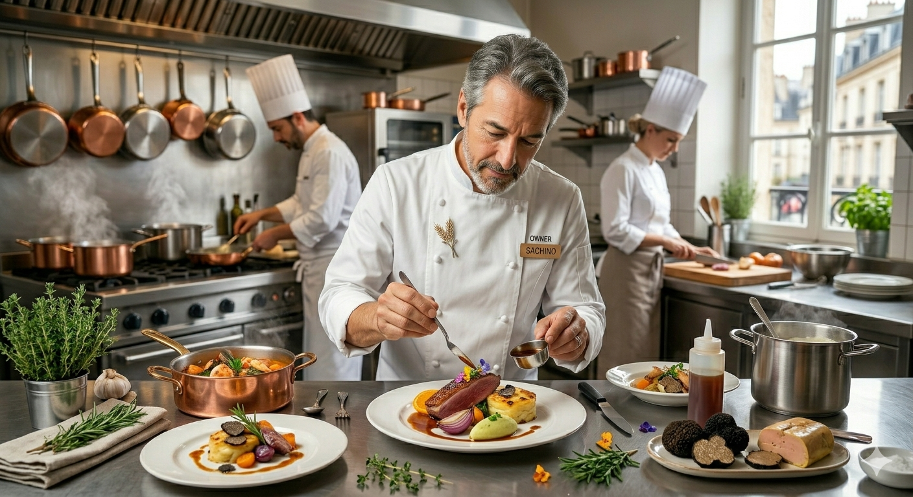

札幌駅から15分、稲穂駅前の隠れ家
食べログアワードSilver受賞。中條大輔シェフが贈る、
塩と油以外すべて手作りの調味料で仕上げる、五感を揺さぶるイタリアン。
Scroll for Experience
1988年、北海道美唄市出身。北イタリア・ピエモンテ州での修行中、土地に根付くサルーミ（食肉加工品）の魅力に没頭。
「生産者・客・シェフが公平（パルコフィエラ）であること」を信念に、2020年、故郷・北海道の食材を主役にした現在のスタイルへ。食べログアワードSilver受賞など、全国から美食家が訪れる名店へと成長。
受賞
Tabelog Silver 2024
修行先
Piedmont, Italy

どこで食べても似たような味に感じる……
ワインとの相性がしっくりこない……
外食は塩分や添加物が気になる……
市販品では決して味わえない、熟成50種、常時12種以上の自家製生ハム。
塩と油以外の調味料（バター、酢、マスタードまで）も全て自家製。
「味覚を整える」ための緻密なコース構成が、あなたの食の基準を変えるはずです。
看板メニュー「しらすのトマトパスタ」をはじめ、毎朝市場で仕入れる魚介、自家菜園の無農薬ハーブ。一切の妥協を出さないサスティナブルな姿勢から生まれる、今日だけのメニューをご用意してお待ちしております。
PARCO FIERAが準備中の新たな取り組み
「12種の自家製生ハム」やバター、自家製マスタード、無添加ハーブソースを旬のセットにして自宅へ直接お届け。
「お店の味を自宅でも楽しみたい」という遠方のお客様の声に応える公式オンラインサービスです。